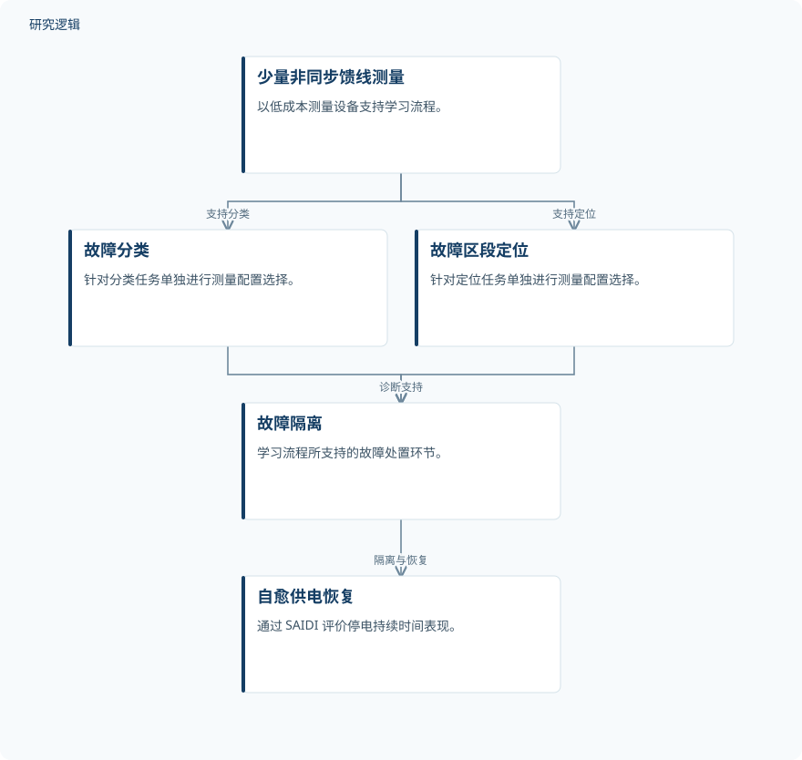

摘要解读
面向主动配电网机器学习故障诊断与自愈恢复的目标驱动高效稀疏计量
Objective-Driven Efficient Sparse Metering for Machine Learning-Based Fault Diagnosis and Self-Healing Restoration in Active Distribution Networks
解读更新 2026-11-10 10:36 · 依据公开摘要整理，未核验全文细节
配电网故障诊断需要布设多少测量设备，才能真正缩短停电时间？这项研究把稀疏测量、机器学习诊断与供电可靠性联系起来，提示我们：诊断准确率最高的方案，未必是恢复供电最快的方案。
文章目录
少装测量设备，如何兼顾诊断与复电？
故障定位、隔离与供电恢复（FLISR）不仅要判断发生了什么故障，还要确定故障区段，并支持后续隔离和恢复。摘要指出，现有机器学习方案多假设采用密集或同步测量，却较少把诊断准确率与供电可靠性直接联系起来。
本文关注的是另一种配置：利用少量低成本、非同步的馈线测量设备完成相关任务。研究价值不只在于减少设备，而在于将测量配置的评价目标从诊断表现延伸到停电时间与全寿命成本。
按任务选测点，再把诊断连接到可靠性
研究在 OpenDSS/MATLAB 中的 IEEE 33 节点系统上建立学习流程，覆盖故障分类、区段定位、隔离与自愈恢复。针对分类与定位，分别运行贪心包裹式选择方法，并采用事件留出评估协议，与覆盖式、过滤式及随机布点方法比较。
评价还包括计入测量设备与未供电能量成本的全寿命成本优化。摘要同时提出数据驱动的可隔离性度量，用于解释定位误差为何落在相邻区段，并通过闭式关系将准确率映射到系统平均停电持续时间指标 SAIDI。
依据摘要整理的稀疏测量与恢复流程


仅概括摘要明确的测量、诊断与恢复关系，不表示具体模型结构或操作时序，也不是论文原图。
下载 SVG图示关系说明
实线表示相邻阶段的信息流，虚线表示跨阶段联系或反馈。
少量非同步馈线测量 → 故障分类：支持分类；少量非同步馈线测量 → 故障区段定位：支持定位；故障分类 → 故障隔离：诊断支持；故障区段定位 → 故障隔离：诊断支持；故障隔离 → 自愈供电恢复：隔离与恢复
分类与定位，需要不同的测量配置
摘要报告，分类表现使用三至四个测量设备即趋于饱和，而定位表现直到十六个设备仍在改善。模型选择也存在目标差异：在干净数据上最准确的学习器，并不是使停电持续时间最短的学习器。贪心包裹式方法在所测试的三个预算档位上，均优于上述布点对照方法。
全寿命成本最小化选出七个测量设备的配置。该配置下，故障定位误差不超过一跳的准确率为 97.3%；按 IEEE Std 1366 衡量，FLISR 使 SAIDI 降低 82.2%，投资回收期为九个月。一跳范围内准确率不等于精确区段命中率，阅读时应保留这一指标口径。
这些结果的适用边界，摘要尚未展开
当前依据仅为完整摘要，无法判断故障样本数量、事件构成、学习器类型，以及事件留出的具体划分方式。三个预算档位的具体配置、各布点对照的实施细节，以及 SAIDI 降幅对应的比较基线，也未在摘要中展开。
摘要明确报告的是 IEEE 33 节点系统上的研究，但不足以判断跨网络、现场数据或不同运行条件下的验证范围。成本参数、恢复操作假设及其敏感性同样需要查阅正文；这些信息未在摘要中报告，并不等于论文没有开展相关工作。
阅读启发：先问准确率服务于什么目标
阅读启发：面向智能运维，值得优先追问的不是“哪个模型分数最高”，而是“哪些诊断错误会延长停电”。进一步阅读可聚焦准确率到 SAIDI 的映射条件、相邻区段误判对隔离与恢复的影响，以及成本假设如何影响测量配置选择，避免把特定系统中的最优配置直接视为通用答案。
以上为本站阅读启发与建议，不是论文已验证的结论。